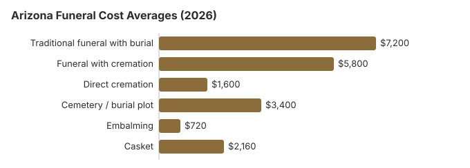

Funeral Costs in Arizona: What Families Pay in 2026
In Arizona a traditional funeral with burial averages about $7,200 on our 2026 estimate, some 13% under the $8,300 national median. Two in three Arizona families (68%) choose cremation instead, which runs about $5,800 with a service or from $1,600 when it is direct. This page breaks those totals into line items and covers the $20 Arizona death certificate, county help through the public fiduciary, and the veterans cemeteries in Phoenix, Prescott and elsewhere.
Arizona Funeral Costs by Line Item
Each line below is our Arizona estimate. ADHS licenses the state's funeral homes but has no say over what they charge.
| What you buy | Average | Spread |
|---|---|---|
| Traditional funeral with burial | $7,200 | $5,400 – $9,360 |
| Funeral with cremation | $5,800 | $4,640 – $7,540 |
| Direct cremation | $1,600 | $1,120 – $2,240 |
| Cemetery / burial plot | $3,400 | $1,700 – $6,800 |
| Embalming | $720 | $500 – $1,500 |
| Casket | $2,160 | $720 – $5,760 |
Where the Arizona figures come from: a statewide estimate we build ourselves; we did not poll Arizona funeral homes, and the numbers are neither a quote nor professional advice. Details are in how the state estimates are built; limits are in the disclaimer.
State sources: Arizona Department of Health Services, Bureau of Licensing for Professions & Occupations (BLPO); A.R.S. §§ 36-831, 11-251(27).

Arizona Prices by City
Phoenix and Tucson homes compete hard on price, while smaller Arizona towns have fewer choices. City estimates:
Arizona Cremation and Burial Guides
Arizona's cremation and burial pages go further:
Cremation Costs in Arizona
With 68% of Arizona deaths ending in cremation, this page is the one most families need: direct cremation from $1,600, cremation with a service from $5,800, plus urns and scattering rules.
Burial Costs in Arizona
Plots from $3,400, then the casket, vault, headstone and opening fees that take an Arizona burial to $16,320-$20,820 in all.
Arizona Fees That Catch Families Out
Watch for these Arizona extras, which often show up after the first quote:
- An embalming fee described as required: Arizona allows refrigeration instead in nearly every case.
Rights Every Funeral Buyer Has in Arizona
If you believe a funeral home in Arizona has violated these rights, you can file a complaint with the FTC at ftc.gov or contact the Funeral Consumers Alliance for guidance. The Arizona Department of Health Services also takes complaints about funeral homes through its online complaint form.
Spending Less on an Arizona Funeral
| Arrangement | Rough cost | What it covers |
|---|---|---|
| Direct cremation | $1,600 | Cremation with no viewing or service; Arizona needs a permit but sets no fixed wait (A.R.S. § 32-1365.02). |
| Direct burial | $3,600 | A prompt burial with no embalming or viewing. Arizona cemeteries bill the plot and the opening and closing on top. |
| Green burial | $3,960 | Burial without embalming in a shroud or biodegradable casket; only some Arizona cemeteries accept it, so ask. |
| Cremation + memorial | $5,800 | Cremation now, a memorial at a later date |
| Traditional funeral | $7,200 | Viewing, ceremony and burial together |
How Cremation Shapes Arizona's Market
Because most Arizona deaths end in cremation, fewer than half of arrangements here are full traditional funerals. Homes that still do many of them tend either to serve a particular community or to compete on price. When you call around, ask each Arizona home how much of its work is cremation versus burial; in a state at 68% cremation, that mix says a lot about how it prices.
What Moves an Arizona Quote
Arizona prices sit in the middle for the West and below the $8,300 US median. Local living costs, the number of competing homes, state paperwork and what a funeral home pays for its building all show up in a quote, and a Phoenix or Tucson home can differ from a rural one by 10-30%.
At 68%, Arizona's cremation rate is 4.6 points above the 63.4% national rate that NFDA projected for 2025.
Arizona Funeral Money Help
- County help in Arizona comes last: relatives are expected to arrange the funeral under § 36-831, and the public fiduciary weighs the estate and the family's finances before the county pays.
- An Arizona spouse or child who qualifies claims Social Security's $255 by phoning 1-800-772-1213; the deadline is two years after the death.
- If you paid an Arizona veteran's funeral, VA Form 21P-530EZ claims the allowance: for a non-service-connected death on or after October 1, 2026, up to $1,032 toward burial and $1,032 toward the plot. Our veteran burial benefits guide explains who qualifies.
- Arizona families can read about Medicaid and charity help in the funeral payment assistance guide, and about paying for a funeral with no money.
Educational Resources
- Funeral Consumers AllianceIndependent nonprofit consumer advocacy for funeral rights
- FTC Funeral RuleThe federal rule protecting funeral consumers
- Funeral Insurance GuideCompare final expense and burial insurance options
- Best Burial Insurance CompaniesSide-by-side comparison of top burial insurance providers
- Payment Assistance GuideGovernment programs and financial help for funeral costs
- Insurance Plan ComparisonCompare coverage, premiums, and payout speed across providers
Compare Funeral Costs
- Average Funeral Cost in 2026National cost breakdown with real prices
- Cremation vs. Burial Cost ComparisonSide-by-side price comparison to help you decide
- Funeral Cost BreakdownEvery line item explained: know what you're paying for
- Cheapest Funeral OptionsLower-cost alternatives, with typical price ranges
- Direct Cremation: Most Affordable OptionNFDA 2023 median $2,645 with a family-supplied container (latest available)
- How to Compare Funeral PricesStep-by-step guide to getting the best price
Arizona Cremation Against Burial
Cremation
- Direct cremation, $1,600 and up
- With a service, $5,800 and up
- Skips the plot
- Memorial can come weeks later
- Chosen by 68% of Arizona families
Traditional Burial
- Funeral, $7,200 and up
- Plot, $3,400 and up
- Most cemeteries insist on an outer burial container
- A permanent place to visit
- Arizona casket shopping: metal models run near $2,500 nationally (NFDA 2023 General Price List Study); Arizona sellers price their own
Arranging an Arizona Funeral, Step by Step
For an Arizona funeral being arranged now, this order saves the most money and the fewest phone calls:
- Choose the disposition: cremation in Arizona or burial in Arizona.
Ordering an Arizona death certificate ($20 a copy)
The Arizona Department of Health Services Bureau of Vital Records charges $20 for each certified copy of a death certificate, so the four or five copies most estates use come to $80-$100 (ADHS death certificate application; checked October 29, 2026). Arizona records go back to July 1909.
- In person: the state office is at 150 N. 18th Avenue, Suite 120, Phoenix (602-364-1300). County health department vital records offices across Arizona issue copies as well, often closer to home.
- By mail: send the application to the Bureau of Vital Records, PO Box 6018, Phoenix, AZ 85005, with a copy of your photo ID or a notarized signature, proof of how you are related, and a self-addressed stamped envelope. Personal checks are not accepted, so pay by money order or cashier's check.
The funeral home usually orders the first set with the death certificate filing; ask for that many on the contract so you are not ordering again a month later.
Arizona's licensing office, county fiduciaries and veterans cemeteries
Funeral directors and funeral establishments in Arizona answer to the Arizona Department of Health Services, Bureau of Licensing for Professions & Occupations (BLPO). Its line, 602-364-2079, will confirm a license or open a complaint.
No Arizona law makes a family hire a funeral director for after-death care: the Funeral Consumers Alliance leaves Arizona off its list of nine states that do. Whoever handles it, the death certificate and the disposition permit must still be filed.
Arizona has no set waiting period before a cremation, though a permit has to be issued first (A.R.S. § 32-1365.02).
When the family cannot pay
Under A.R.S. § 36-831 relatives are expected to arrange the funeral. The county steps in only when nobody is willing or able: the board of supervisors pays for a burial or other disposition under § 11-251(27), and the county public fiduciary, which usually runs it, reviews both the estate and the family's means. (Source: A.R.S. §§ 36-831, 11-251(27).) Social Security's $255 is a separate payment for an eligible spouse or child, claimed within two years, and none of it is paid to an Arizona funeral home.
Veterans cemeteries in Arizona
For the two national cemeteries, your funeral home calls the VA's National Cemetery Scheduling Office at 800-535-1117 to reserve the grave: National Memorial Cemetery of Arizona in Phoenix (480-513-3600) and Prescott National Cemetery (928-445-4860), which now takes cremated remains only. The state and tribal cemeteries take requests themselves: Arizona Veterans Memorial Cemetery at Camp Navajo (928-214-3474), Arizona Veterans Memorial Cemetery at Marana (520-638-4894), Southern Arizona Veterans Memorial Cemetery (520-458-7144), Monte Calvario Veterans Cemetery (tribal, 520-879-6317) and San Carlos Apache Tribal Veterans Cemetery (tribal, 928-475-2361).
Arizona steps
- Ask each Arizona home for its General Price List; under the FTC Funeral Rule it must hand one over to anyone who asks in person.
- Decide about embalming and a viewing on day one; leaving both out saves Arizona families more than any other choice.
- Talk to the county public fiduciary before signing a funeral contract; Maricopa County completes its application with one of its contracted funeral homes.
- For a veteran, check National Memorial Cemetery of Arizona before buying a private plot.
- Report any Arizona home that withholds its price list or charges off it to 602-364-2079.
Frequently Asked Questions
What do Arizona funerals cost?
Our 2026 Arizona estimate is $7,200 for a traditional funeral, 13% under the $8,300 US median. Cremation with a service is about $5,800 and direct cremation starts near $1,600; choosing burial adds roughly $3,400 of cemetery costs.
How much less is cremation in Arizona?
Much cheaper. Direct cremation, at about $1,600, saves roughly $5,600 against the $7,200 traditional funeral, or about $9,000 once some $3,400 in Arizona cemetery costs is counted.
What rights does an Arizona family have?
Federal law (the FTC Funeral Rule, 16 CFR 453) entitles you to an itemized General Price List and to phone quotes, and lets you bring a casket or urn from elsewhere without a handling fee. Arizona does not require a funeral director for after-death care, according to the Funeral Consumers Alliance. Licensing and complaints sit with ADHS's Bureau of Licensing for Professions & Occupations (BLPO) at 602-364-2079.
How do I keep funeral costs down in Arizona?
Conservation burial grounds and hybrid cemetery sections in Arizona typically cost 30-50% less than traditional plots in the same cemetery.
Does Arizona require embalming?
Only when a body is not refrigerated and burial or cremation will not happen within 24 hours. Arizona's funeral rules (A.A.C. R9-9B-306, formerly R4-12-303, renumbered in January 2026) make it a deceptive practice for a funeral home to say embalming is legally required outside that case, and a crematory must keep an unembalmed body at or below 38°F (A.R.S. § 32-1399).
So for direct cremation, immediate burial or a closed-casket service with prompt refrigeration, you can decline it. If you choose it for a viewing, embalming adds about $720 on this page's estimate. Complaints go to the Arizona Department of Health Services' funeral licensing office (602-364-2079).
Are Arizona funerals cheaper than the national average?
Cheaper. Our $7,200 Arizona estimate is below the NFDA's 2023 national median of $8,300 for a funeral with viewing and burial; with cremation, the national median was $6,280. Actual Arizona price lists vary, so collect a few.
What is the lowest-cost choice in Arizona?
Direct cremation, at roughly $1,600. Direct burial is the next step up at about $3,600, which is $3,600 below a traditional Arizona funeral.
Where are the fairly priced Arizona funeral homes?
Arizona homes have to tell you their prices over the phone under the FTC Funeral Rule, so a few calls will sort them. A casket or urn from another seller must be accepted without an extra charge.